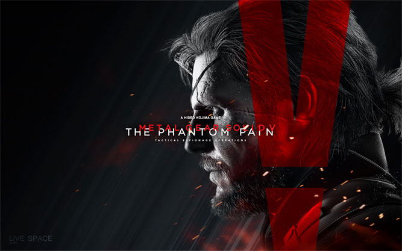

На дворе 2015 год и мы живем в мире, где реалистичные компьютерные игры никого не удивят. Каждый год такие игры выходят пачками. Но, среди таких игр выделяются игры, которые становятся ожидаемыми играми и иногда даже выигрывают премию "Самая ожидаемая игра" на разных выставках и конференциях.
Первая половина года уже прошла и до конца года нас ждет кучу новинок и интересных видеоигр. Поэтому я решил начать пост-трилогию о самых ожидаемых играх. Вторым постом будет "Самые ожидаемые игры первой половины 2016 года". Давайте, пройдемся по списку :)
Анонс этой игры состоялся 10 июня 2013 года, на игровой выставке Е3. Компьютерная игра от третьего лица основанный о серии фильмов "Безумный Макс". Главным героем игры будет Макс Рокатански, который вынужден выживать в пост-апокалипсическом мире. В игре главным локацием будет пустыня. Безусловно, это один из самых ожидаемых игр в жанре пост-апокалипсис. Релиз игры назначена на 1 сентября на платформах PC, XOne, PS4.

Детище Хидео Кодзима является стелс-экшеном от третьего лица. В этом году на свет выходит уже пятая часть этой серии. В игровой индустрии это главная гордость Японии. Главным героем игры выступает все тот же Веном Снейк. Пятая часть серии продолжает приключения Биг Босса. Он просыпается в 1984 году после девятилетней комы и начинает расследовать деятельность загадочной организации XOF. Дата выхода игры 1 сентября на PS3, PS4, X360, XOne и на РС.

Детище Хидео Кодзима является стелс-экшеном от третьего лица. В этом году на свет выходит уже пятая часть этой серии. В игровой индустрии это главная гордость Японии. Главным героем игры выступает все тот же Веном Снейк. Пятая часть серии продолжает приключения Биг Босса. Он просыпается в 1984 году после девятилетней комы и начинает расследовать деятельность загадочной организации XOF. Дата выхода игры 1 сентября на PS3, PS4, X360, XOne и на РС.